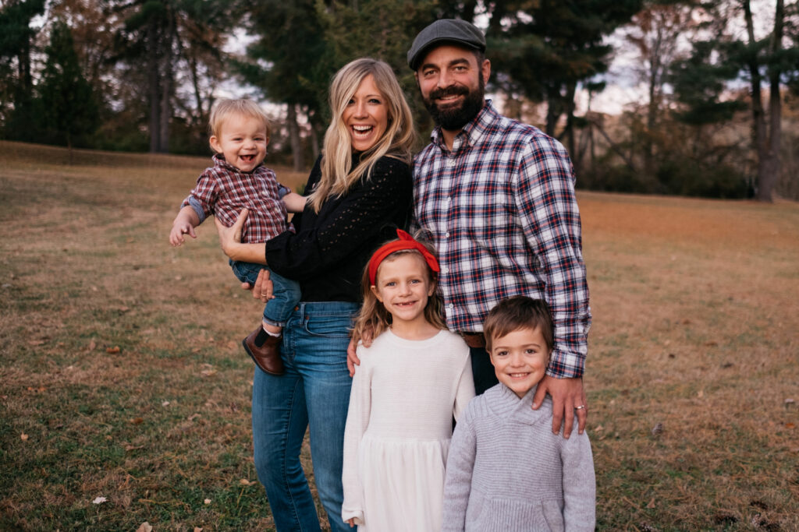

About Ellie
Ellie Holcomb is a Nashville-based, Christian singer/songwriter. She's consistently writing, touring and performing while raising three kids with her husband, Drew, in her hometown of Nashville, Tennessee. She became one of the most successful and respected CCM artists to emerge in the 2010s, with songs that blend personal introspection with a sincere embrace of the power of faith. After several years of working with her husband, Ellie released her first solo albumn in 2014 As Sure as the Sun. Her most recent albumn, Canyon, was released in 2021, which reflected the chaotic times in which the songs were created.
